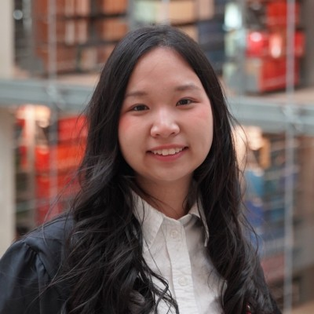
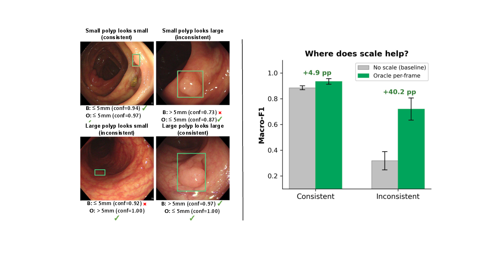
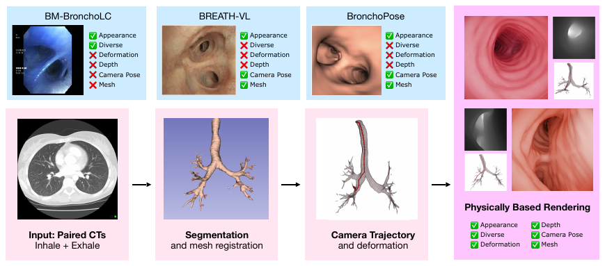
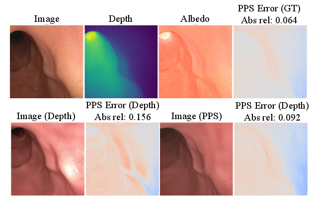
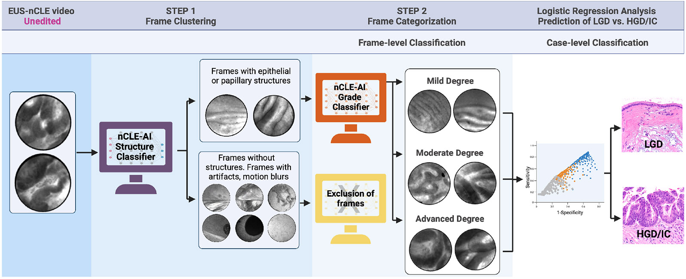
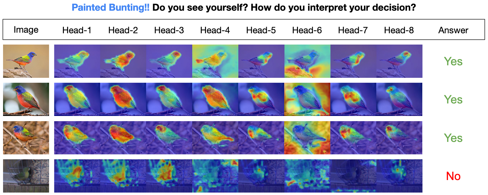

Xinqi (Ana) Xiong
I am a Ph.D. student in Computer Science at the University of North Carolina at Chapel Hill, working with Pew-Thian Yap. Previously, I worked with Roni Sengupta at UNC and Wei-Lun Chao at The Ohio State University. I received my B.S. in Data Analytics from Ohio State in 2024.
My research interests span computer vision, medical imaging, and interpretable machine learning. My work examines how vision models use visual and geometric information in endoscopy, deepfake detection, and fine-grained recognition. I currently use MRI to study brain structure and development, including mapping the microstructure of the cerebellum in infants.

Research
 |
Understanding Model Behavior in Monocular Polyp Sizing Xinqi Xiong, Andrea Dunn Beltran, Junmyeong Choi, Sarah K. McGill, Marc Niethammer, Roni Sengupta MICCAI, 2026 paper / code An audit of monocular polyp sizing that examines metric scale, shortcut cues, and segmentation quality. |
 |
TalkingHeadBench: A Multi-Modal Benchmark & Analysis of Talking-Head DeepFake Detection Xinqi Xiong*, Prakrut Patel*, Qingyuan Fan*, Amisha Wadhwa*, Sarathy Selvam*, Xiao Guo, Luchao Qi, Xiaoming Liu, Roni Sengupta WACV, 2026 · *Equal contribution paper / project / dataset A benchmark for talking-head deepfake detection under shifts in identities and generators. |
 |
Stop Holding Your Breath: CT-Informed Gaussian Splatting for Dynamic Bronchoscopy Andrea Dunn Beltran, Daniel Rho, Aarav Mehta, Xinqi Xiong, Raúl San José Estépar, Ron Alterovitz, Marc Niethammer, Roni Sengupta Preprint, 2026 paper / project CT-informed modeling of respiratory motion for dynamic bronchoscopic reconstruction. |
 |
PPS-Ctrl: Controllable Sim-to-Real Translation for Colonoscopy Depth Estimation Xinqi Xiong, Andrea Dunn Beltran, Jun Myeong Choi, Marc Niethammer, Roni Sengupta MMFM-BIOMED Workshop at CVPR, 2025 · Oral paper / code Per-pixel shading conditions diffusion-based translation to preserve geometry while adapting synthetic colonoscopy images to real data. |
 |
Towards automating risk stratification of intraductal papillary mucinous neoplasms: Artificial intelligence advances beyond human expertise with confocal laser endomicroscopy Somashekar G. Krishna, Ahmed Abdelbaki, Ziwei Li, Stacey Culp, Xinqi Xiong, Bertrand Napoleon, Shaffer Mok, Helga Bertani, Yunlu Feng, Pradermchai Kongkam, Anjuli K. Luthra, Jorge D. Machicado, Samer El-Dika, Sarah Leblanc, Damien Meng Yew Tan, Jordan Burlen, Margaret G. Keane, Tara Keihanian, Antonio Mendoza Ladd, Thiruvengadam Muniraj, Kavel H. Visrodia, Wei Chen, Ashwini K. Esnakula, Phil A. Hart, Wei-Lun Chao Pancreatology, 2025 paper AI-based risk stratification of pancreatic lesions using confocal laser endomicroscopy. |
 |
A Simple Interpretable Transformer for Fine-Grained Image Classification and Analysis Dipanjyoti Paul, Arpita Chowdhury, Xinqi Xiong, Feng-Ju Chang, David Carlyn, Samuel Stevens, Kaiya L. Provost, Anuj Karpatne, Bryan Carstens, Daniel Rubenstein, Charles Stewart, Tanya Berger-Wolf, Yu Su, Wei-Lun Chao ICLR, 2024 paper / code Class-specific queries and cross-attention reveal visual attributes used for fine-grained image classification. |


Posters
Surface Mapping of Cerebellar Microstructure in Infancy
Xinqi Xiong, Khoi Huynh, Junjie Zhao, Sahar Ahmad, Pew-Thian Yap
Society for Neuroscience, 2026 · Abstract and poster
secret stuff
Random personal projects / TMI
- Oʻahu Heritage Atlas
-
A personal map of Japanese heritage on Oʻahu.
Switch the map to Japanese, filter for shrines, and open Hawaiʻi Izumo Taisha. - My time-management agent
- Short demo coming later.